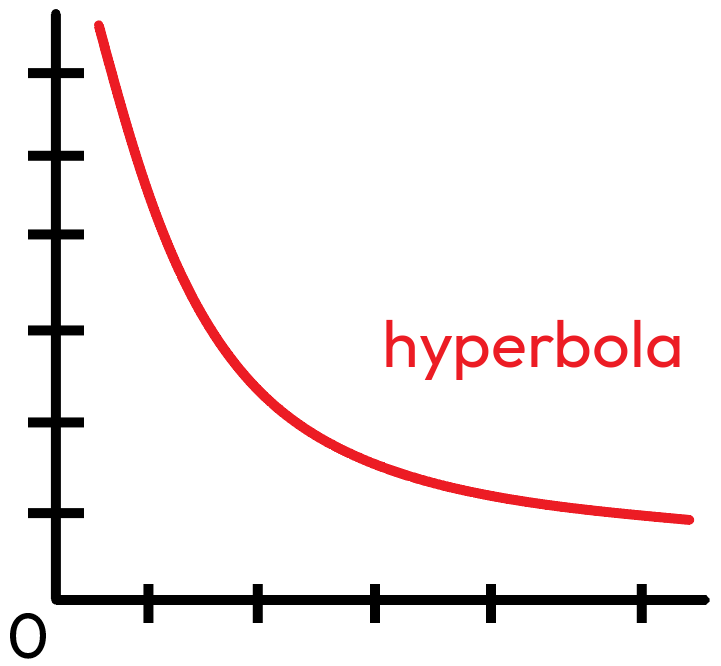

Pravoúhlá soustava souřadnic se skládá z osy x a y, které se protínají v bodě zvaném počátek. Slouží k určování polohy bodů na rovině pomocí souřadnic (x, y). Je základním nástrojem v geometrii i algebře. Využívá se například při kreslení grafů.
Pravoúhlá soustava souřadnic
Hyperbola (nikdy se nedotkne os)